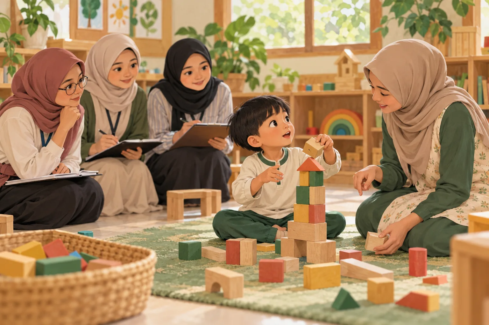
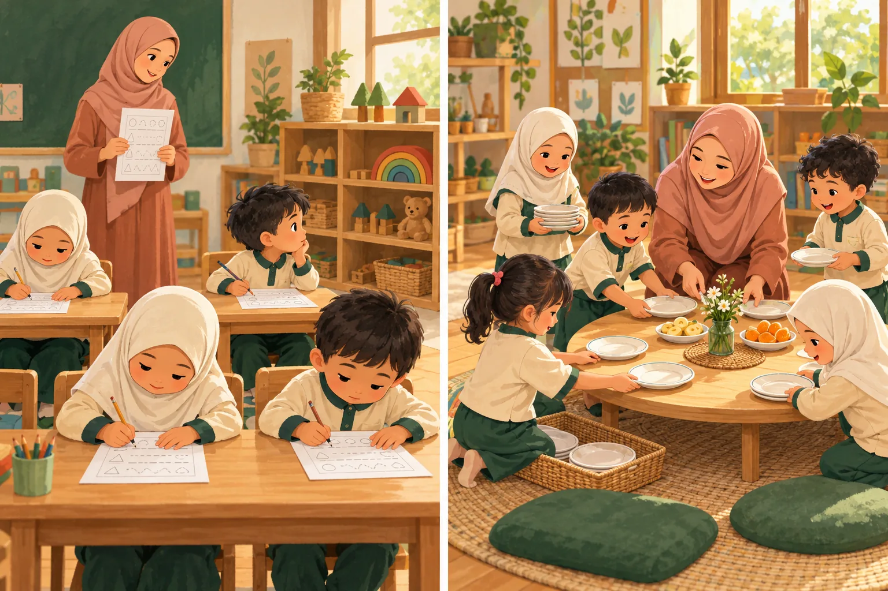
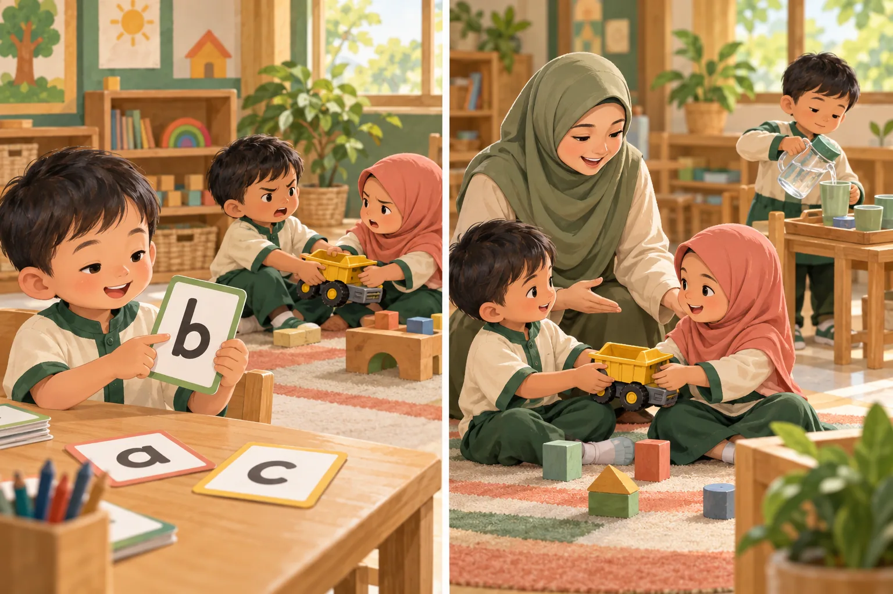

Memahami pendidikan.
Menemani anak bertumbuh.
Jelajahi konsep, baca situasi nyata, dan bangun alasan di balik setiap keputusan sebagai calon pendidik anak usia dini.

Setiap unit membawa Anda dari pertanyaan pemantik ke konsep, penerapan, latihan, dan refleksi.
Tiga ruang untuk bertumbuh
Memahami fondasi
Hakikat, manusia, tujuan, landasan, pemikiran, dan sistem pendidikan.
Pertemuan 1–702Membaca dunia anak
PAUD, nilai Islam, relasi pedagogis, serta bermain dan pengalaman.
Pertemuan 9–1203Menimbang tindakan
Kebudayaan, tantangan digital, dan keputusan profesional yang beralasan.
Pertemuan 13–15Mulai dari pertanyaan mendasar

Hakikat pendidikan dan ilmu pendidikan
Membedakan tindakan mendidik, mengajar, mengasuh, dan melatih melalui pengalaman sehari-hari anak.
Pelajari materiManusia sebagai subjek pendidikan
Memahami potensi, martabat, keterdidikan, dan pendidikan sepanjang hayat tanpa melihat anak sebagai bahan yang pasif.
Pelajari materi
Tujuan dan fungsi pendidikan
Menghubungkan tujuan nasional dengan pengalaman belajar yang bermakna bagi anak.
Pelajari materi“Anak yang diam pasti sedang belajar.”
Benarkah demikian?
Ketertiban belum cukup menjadi bukti pemahaman. Belajar membaca pengalaman anak dimulai dengan memeriksa asumsi kita sendiri.
Telusuri kasus pertama →